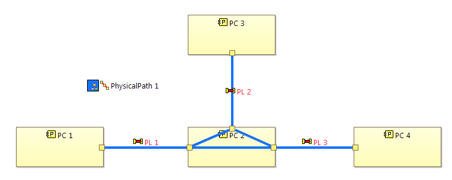

- The selected elements must form a uninterrupted path of Functional Exchanges.
- The path of selected elements shall only have two ends, which means that it can be composed by only one branch.
- Only Functional Exchanges must be selected.
On an existing dataflow diagram, select all the Functional Exchanges contributing to your Functional Chain.
|
|
|

Using the contextual menu on this multiple selection, click on Functional Chain / Create a Functional Chain
A new Functional Chain is created and displayed.

If you want to edit a Functional Chain, you have to create a Functional Chain Description diagram. You can create this diagram from a Navigate command in the contextual menu from a Functional Chain.
A new diagram is created, representing your Functional Chain. What you see on this diagram are not Functions and Exchanges but Functional Chain Involvement elements. There are 3 types of Involvements:

All the modifications done to the Functional Chain Description diagram are visible on the respective Dataflow Diagram as illustrated below:

For a complete overview of the available diagram tools you can consult these sections:
Functional Chain Description diagrams can be combined with Sequence Links and Control nodes in order to enriched them with additional sequencing information.
|
|
|

The sequencing information can also be displayed in xAB diagrams. By default the associated elements are hidden, but they can be displayed by unchecking the Hide Sequencing Information filter.

For a complete overview of the available diagram tools you can consult these sections:
Functional Chains can be assembled and reused in order to express more complex scenarios.
|
|
|
A example of two Functional Chains assembled through the means of the Functional Exchange 2.
A example of two Functional Chains assembled through the means of the common System Function 3. Please note that the source and target of the connecting Involvement Link are two Involvement Functions that both reference System Function 3.

Involved Functional Chains can be folded in order to hide their involvements.
In order to do so, you must first select the the region of the Functional chain (this displays a button in the top left corner), and then the fold button must be pressed as illustrated bellow.

Once the Functional Chain is folded, all the displayed Involvement Links and Sequence Links having as source or target the now hidden involvements will be displayed directly on the Functional Chain. Please note how the Functional Exchange 2 edge has now as source the Functional Chain 1 instead of the previous System Function 2.
Functional Chains can be involved in other Functional Chains, and thus producing Composite Functional Chains.
Please note how Functional Chain 1 and Functional Chain 2 are involved in Level2 which itself is involved in another Functional Chain.
The same strategy applies for Physical Paths on System Architecture Blank and Logical Architecture Blank and Physical Architecture Blank diagrams. Please note that Sequencing and Control concepts are not possible in this diagram.
|
|
|


Corresponding Physical Path Description diagram.

Physical paths can be composed in a way that there are many branches in the same physical path. For example, in the below image, if the physical path begins with PL 1, at PC 2 it is separated into 2 branches, either it can go to PC 3 via PL 2 or it can go to PC 4 via PL 3.
There is no orientation in physical path, in other words, depending on which physical component the physical path begins with that we have a different way to interpret the physical path. For example, for the above image, we can also understand that the path begins with PC 3, via PL 2 it reaches PC 2 and then dispatches into PC 1 and PC 4 via PL 1 and PL 3 accordingly. Therefore, when displaying a physical path in diagrams, in case of having different ways to track a physical path, we illustrate all of them.

For example, in the above image, inside PC 2 there are 3 internal links that form the physical path. They allow the continuity of the physical path regardless of whatever way the physical path is interpreted.
Two filters are provided to hide physical path internal links and functional chain internal links. For the same above example, if the "Hide Physical Path Internal Links" filter is applied, internal links related to the physical path "Physical Path 1" will be hidden in the diagram.
Physical links and functional exchanges are colored in black if there are multiple physical paths or functional chains passing through. To help users better distinguish which physical paths or functional chains are involving in a physical link or a functional exchange, a pie icon with colors of physical paths/functional chains is displayed by default on the beginning and on the end of the physical link/functional exchange as shown in the following image.
Users can also choose to display the name of involving physical paths/functional chains next to the pie icon.
Besides, filters are also provided to hide the pie icon or the label of involving physical paths/functional chains according to user's need.